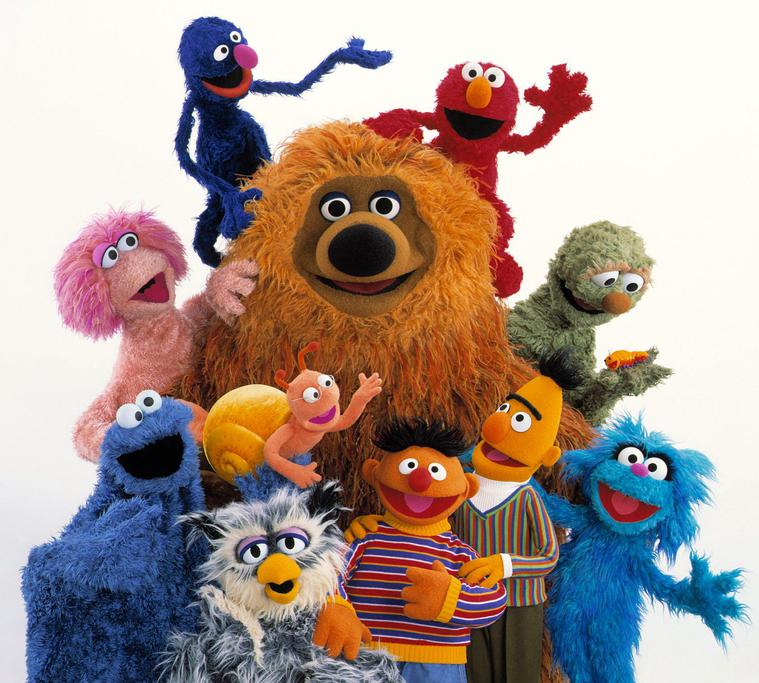
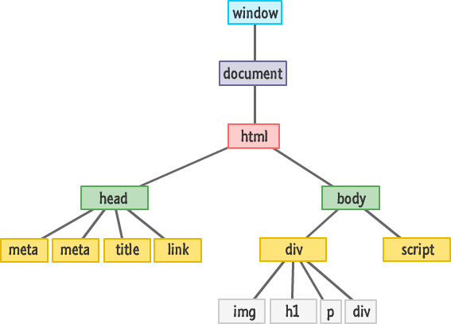

Webscraping mit Selenium
von Julius Dehner
Wieso? Weshalb? Warum?
Wann ist Webscraping sinnvoll?
- Daten von externen Webseiten benötigt
- Keine API
- Keine Zeit um Daten manuell zu sammeln

Alternativen

- Python basierter Webcrawler & -scraper
- Python Webscraper, benutzt tree parsing

- Javascript + headless Chrome
- Kann komplette Browserfunktionalität automatisieren!
- Wird von Google entwickelt und wird für Google Suchergebnisse verwendet
- Webtesting Framework
- Unterstützte Sprachen:
- Java
- C#
- Python
- etc...
- Alle aktuellen Browser unterstützt
Mittlerweile wird  zum
rendern kompletter Webseiten verwendet!
zum
rendern kompletter Webseiten verwendet!
... :(
Nur Selenium und Puppeteer unterstützen HTML Rendering mit Javascript.
Spoiler:
Vorteile Puppeteer:
- Leichtere Javascript Execution
- Network Interception
- Debugging++
Vorteile Selenium:
- Man kennt's...
- Bibliotheken aus der Programmiersprache deiner Wahl
- Kein Javascript!
Wie funktioniert's?
Ansprache von Elementen über das DOM oder Attribute

public class WetterScrape {
public static void main(String[] args) throws InterruptedException {
ChromeOptions options = new ChromeOptions();
options.addExtensions(new File("uBlock-Origin_v1.17.4.crx"));
ChromeDriver driver = new ChromeDriver(options);
driver.get("https://www.wetter.de");
WebElement searchBar = driver.findElementById("search-header-input");
WebElement searchButton = driver.findElementById("search-header-button");
searchBar.sendKeys("85417");
searchButton.click();
String maxTemperature = driver.findElementByClassName(
"wt-color-temperature-max").getText();
String minTemperature = driver.findElementByClassName(
"wt-color-temperature-min").getText();
System.out.println(
"Heute hat es " + minTemperature + "C bis " + maxTemperature + "C.");
Thread.sleep(10000);
driver.close();
}
}
Headless mode for headless servers
Easy:
ChromeOptions options = new ChromeOptions();
options.addArgument('--headless');
ChromeDriver driver = new ChromeDriver(options);
Aber:
Manche Seiten rendern im headless mode nicht.
Deployment

Docker macht's mal wieder einfach!
Dockerfile
FROM python:3.7-alpine
COPY . GameDeals
RUN apk add chromium \
chromium-chromedriver \
python3-dev && \
pip install GameDeals/ && \
CMD ["GameDeals"]
Wichtig: Docker Container muss mit
docker run --shm-size=2g author/image
gestartet werden
Einsatzbeispiel
Confluence Artikel sammeln

Danke für die Aufmerksamkeit!
Quellen
DogeSelenium Icon
Sesamstraße
Scrapy Puppeteer Seleium
JS DOM Docker Wal
{kind=link}
Bongo Cat pikachu Seal